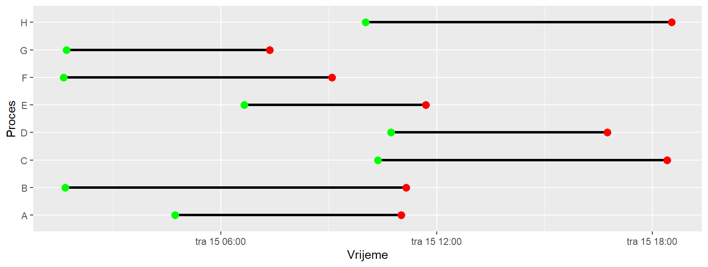

10 Rad s vremenskim podacima
10.1 Rad sa vremenskim tipovima podataka
Upravljanje datumima i vremenskim oznakama često je izazovno jer moramo voditi računa o više stvari odjednom:
- različitim oblicima zapisa datuma i vremena
- različitim internim reprezentacijama
- vremenskim zonama
- razlici između matematičkog i kalendarskog poimanja vremena
Jedan od često korištenih standarda je tzv. unix vrijeme odnosno POSIX vrijeme, gdje se vrijeme bilježi kao broj sekundi protekao od ponoći 1. siječnja 1970. u vremenskoj zoni UTC (Coordinated Universal Time).
U jeziku R za ovo poglavlje najvažnije su dvije klase:
Dateza prikaz datumaPOSIXctza prikaz vremenske oznake
Za praktičniji rad koristit ćemo i paket lubridate.
10.1.1 Klasa Date
Klasu Date koristimo kada nas zanima datum, ali ne i točno vrijeme neke opservacije ili poslovnog događaja. Ova klasa nema poseban konstruktor, nego objekte ove klase najčešće stvaramo pomoću funkcija:
Sys.Date()koja vraća današnji datumas.Date()kojoj prosljeđujemo znakovni niz koji predstavlja datum
Funkcija as.Date() po default-u prihvaća datume oblika %Y-%m-%d, gdje %Y predstavlja četveroznamenkastu godinu, a %m i %d dvoznamenkasti mjesec i dan.
## [1] "2026-11-23"
## [1] "2026-04-01"10.1.2 Formatska specifikacija
Ako želimo interpretirati datum zapisan u nekom drugom obliku, funkciji as.Date() moramo dodati parametar format koji opisuje zapis kojeg koristimo. Na primjer, za zapis 28/10/1978 vrijednost parametra format treba biti %d/%m/%Y.
## [1] "1978-10-28"Sve moguće formatske specifikacije možemo pogledati uz pomoć naredbe ?strptime.
10.1.3 Klasa POSIXct
Klasa POSIXct nam je pogodna kada nije dovoljno pohraniti samo datum, nego moramo znati i točno vrijeme neke opservacije ili poslovnog događaja. Objekte ove klase najčešće stvaramo pomoću funkcija:
Sys.time()koja vraća trenutnu vremensku oznakuas.POSIXct()kojoj kao parametar prosljeđujemo znakovni niz koji predstavlja datum i vrijeme
Funkcija as.POSIXct() najčešće očekuje vremensku oznaku oblika %Y-%m-%d %H:%M:%S, gdje %H, %M i %S predstavljaju sate, minute i sekunde u 24-satnom obliku zapisa.
## [1] "2026-11-23 13:43:42 CET"
## [1] "2026-04-01 14:05:12 CEST"10.1.4 Formatska specifikacija i vremenske zone
Kao i kod klase Date, za parsiranje drugačijih oblika vremenskih oznaka možemo koristiti parametar format.
Kod vremenskih oznaka važna je i vremenska zona. Funkcije poput Sys.time() i as.POSIXct() po default-u se oslanjaju na podatke operativnog sustava. Ako želimo biti eksplicitni, funkciji as.POSIXct() možemo dodati i parametar tz.
## [1] "2026-04-01 14:05:12 CEST"Imena vremenskih zona su standardizirana (tzv. Olsonove vremenske zone), a u R-u ih možemo pregledati pomoću funkcije OlsonNames(). Trenutnu vremensku zonu sustava možemo ispisati pomoću funkcije Sys.timezone().
Zadatak 10.1 - klase Date i POSIXct
# ispišite današnji datum
# ispišite trenutnu vremensku oznaku
# pretvorite sljedeće znakovne nizove u objekt tipa `Date` i ispišite rezultat na zaslon:
# "1986-12-27"
# "2016-31-05"
# "17. 9. 2015."
# pretvorite sljedeće znakovne nizove u vremenske oznake i ispišite ih na zaslon:
# "2015-10-28 15:30:42"
# "01-12-2001 14:30" <-- oznaka očitana u New York-u, SAD, vremenska zona America/New_York# ispišite današnji datum
Sys.Date()
# ispišite trenutnu vremensku oznaku
Sys.time()
# pretvorite sljedeće znakovne nizove u objekt tipa `Date` i ispišite rezultat na zaslon:
# "1986-12-27"
# "2016-31-05"
# "17. 9. 2015."
as.Date("1986-12-27")
as.Date("2016-31-05", format = "%Y-%d-%m")
as.Date("17. 9. 2015.", format = "%d. %m. %Y.")
# pretvorite sljedeće znakovne nizove u vremenske oznake i ispišite ih na zaslon:
# "2015-10-28 15:30:42"
# "01-12-2001 14:30" <-- oznaka očitana u New York-u, SAD, vremenska zona America/New_York
as.POSIXct("2015-10-28 15:30:42")
as.POSIXct("01-12-2001 14:30", tz = "America/New_York", format = "%d-%m-%Y %H:%M")## [1] "2026-11-23"
## [1] "2026-11-23 13:43:42 CET"
## [1] "1986-12-27"
## [1] "2016-05-31"
## [1] "2015-09-17"
## [1] "2015-10-28 15:30:42 CET"
## [1] "2001-12-01 14:30:00 EST"10.1.5 Aritmetika sa vremenskim tipovima podataka
Velika prednost vremenskih tipova podataka je to što računalo “zna” pravila rada s datumima i vremenom. Zbog toga su podržane i osnovne aritmetičke operacije:
- zbrajanje i oduzimanje datuma te cijelog broja
- zbrajanje i oduzimanje vremenske oznake te cijelog broja
- oduzimanje dva datuma ili dvije vremenske oznake
Kod datuma se cijeli broj interpretira kao broj dana, a kod vremenskih oznaka kao broj sekundi.
## [1] "2026-11-23 13:42:02 CET"
## Time difference of 365 daysZadatak 10.2 - aritmetika s datumima i vremenskim oznakama
# ispišite koji je datum bio 1000 dana prije današnjeg datuma
# dodajte jedan dan datumima 28.2.2015. i 28.2.2016. i ispišite rezultat
# ispišite koliko je dana prošlo od 1.1.2000. do danas
# ispišite koje će biti vrijeme 1000 sekundi od ovog trenutka# ispišite koji je datum bio 1000 dana prije današnjeg datuma
Sys.Date() - 1000
# dodajte jedan dan datumima 28.2.2015. i 28.2.2016. i ispišite rezultat
as.Date("2015-02-28") + 1
as.Date("2016-02-28") + 1
# ispišite koliko je dana prošlo od 1.1.2000. do danas
Sys.Date() - as.Date("2000-01-01")
# ispišite koje će biti vrijeme 1000 sekundi od ovog trenutka
Sys.time() + 1000## [1] "2024-02-27"
## [1] "2015-03-01"
## [1] "2016-02-29"
## Time difference of 9823 days
## [1] "2026-11-23 14:00:22 CET"10.1.6 Klasa i funkcija difftime
Kada oduzimamo dva datuma ili dvije vremenske oznake, rezultat nije običan broj nego objekt klase difftime, koji predstavlja vremenski razmak.
Kod ispisa se po default-u koristi automatski odabir jedinice (units = "auto"). Ako želimo rezultat u točno određenoj jedinici, koristimo funkciju difftime() i parametar units, npr. "seconds", "minutes", "hours", "days" ili "weeks".
## Time difference of 235765.7 hoursFunkcija difftime() radi i s vremenskim oznakama, pa se možemo spustiti sve do razine sekunde. Ako nam treba samo broj, rezultat možemo pretvoriti pomoću funkcije as.numeric().
Zadatak 10.3 - funkcija difftime
# koliko je prošlo tjedana između 1.3.2016. i 1.3.2015.?
# koristite funkciju `difftime`
# NAPOMENA: ne morate eksplicitno pozvati funkciju `as.Date`, funkcija `difftime`
# će to sama učiniti ako pošaljete datum u default-nom obliku
# koliko je prošlo sati od ponoći 1.3.2015. do sada?# koliko je prošlo tjedana između 1.3.2016. i 1.3.2015.?
difftime("2016-03-01", "2015-03-01", units = "weeks")
# koliko je prošlo sati od ponoći 1.3.2015. do sada?
difftime(Sys.time(), as.POSIXct("2015-03-01 00:00:00"), units = "hours")## Time difference of 52.28571 weeks
## Time difference of 102853.7 hours10.1.7 Funkcija seq i vremenski tipovi podataka
Jezik R implementira i posebnu varijantu funkcije seq() za rad s vremenskim tipovima podataka:
Najvažniji parametri su:
from– početni datum ili vremenska oznakato– konačni datum ili vremenska oznakaby– korak sekvence; može biti broj ili tekst poput"7 days","2 weeks","30 mins"length.out– željena duljina sekvencealong.with– vektor čiju duljinu koristimo kao referencu
Kod objekata klase Date broj u argumentu by znači broj dana, a kod objekata klase POSIXct broj sekundi.
Zadatak 10.4 - funkcija seq i vremenski tip podataka
# ispišite sekvencu datuma od 1.1.2020. do 1.1.2030. u koracima od 6 mjeseci
# napravite raspored čišćenja zajedničkih prostora za stambenu zgradu
# prostori se moraju čistiti svaka 3 tjedna
# svaki stan mora imati svoj datum čišćenja
# stanovi su opisani sljedećim podatkovnim okvirom
stanovi <- data.frame(broj_stana = 1:10,
prezime = c("Ebert", "Ladovac", "Cerić", "Dikla", "Anić",
"Perić", "Žužić", "Babić", "Ibiz", "Radler"))
# dodajte stupac `ciscenje` sa po jednim datumom za svaki pojedini stan
# redom po brojevima stana, za idućih 10 čišćenja počevši od današnjeg datuma
# (za ambiciozne: dodajte 5 takvih stupaca koji će pokrivati 50
# nastupajućih čišćenja)
# ispisite podatkovni okvir `stanovi` (koristite `print` ili pretvorite datume u znakovni stupac)# ispišite sekvencu datuma od 1.1.2020. do 1.1.2030. u koracima od 6 mjeseci
seq(as.Date('2020-01-01'), as.Date('2030-01-01'), by = "6 months")## [1] "2020-01-01" "2020-07-01" "2021-01-01" "2021-07-01" "2022-01-01"
## [6] "2022-07-01" "2023-01-01" "2023-07-01" "2024-01-01" "2024-07-01"
## [11] "2025-01-01" "2025-07-01" "2026-01-01" "2026-07-01" "2027-01-01"
## [16] "2027-07-01" "2028-01-01" "2028-07-01" "2029-01-01" "2029-07-01"
## [21] "2030-01-01"# dodajte stupac `ciscenje` sa po jednim datumom za svaki pojedini stan
# redom po brojevima stana, počevši od današnjeg datuma
seq(Sys.Date(), by = "3 weeks",
along.with = stanovi$broj_stana) -> stanovi$ciscenje
stanovi## broj_stana prezime ciscenje
## 1 1 Ebert 2026-11-23
## 2 2 Ladovac 2026-12-14
## 3 3 Cerić 2027-01-04
## 4 4 Dikla 2027-01-25
## 5 5 Anić 2027-02-15
## 6 6 Perić 2027-03-08
## 7 7 Žužić 2027-03-29
## 8 8 Babić 2027-04-19
## 9 9 Ibiz 2027-05-10
## 10 10 Radler 2027-05-31# (za ambiciozne: dodajte 5 takvih stupaca koji će pokrivati 50
# nastupajućih čišćenja)
stanovi <- data.frame(broj_stana = 1:10,
prezime = c("Ebert", "Ladovac", "Cerić", "Dikla", "Anić",
"Perić", "Žužić", "Babić", "Ibiz", "Radler"))
ciscenje <- data.frame(broj_stana = rep(stanovi$broj_stana, 5),
prezime = rep(stanovi$prezime, 5),
ciklus = rep(1:5, each = nrow(stanovi)),
ciscenje = seq(Sys.Date(), by = "3 weeks",
length.out = nrow(stanovi) * 5))
stanovi <- pivot_wider(ciscenje, names_from = ciklus, names_prefix = "ciklus_", values_from = ciscenje)
head(stanovi)## # A tibble: 6 × 7
## broj_stana prezime ciklus_1 ciklus_2 ciklus_3 ciklus_4 ciklus_5
## <int> <chr> <date> <date> <date> <date> <date>
## 1 1 Ebert 2026-11-23 2027-06-21 2028-01-17 2028-08-14 2029-03-12
## 2 2 Ladovac 2026-12-14 2027-07-12 2028-02-07 2028-09-04 2029-04-02
## 3 3 Cerić 2027-01-04 2027-08-02 2028-02-28 2028-09-25 2029-04-23
## 4 4 Dikla 2027-01-25 2027-08-23 2028-03-20 2028-10-16 2029-05-14
## 5 5 Anić 2027-02-15 2027-09-13 2028-04-10 2028-11-06 2029-06-04
## 6 6 Perić 2027-03-08 2027-10-04 2028-05-01 2028-11-27 2029-06-2510.2 Paket lubridate
Iako jezik R ima relativno dobru podršku za rad sa datumima i vremenskim oznakama, iako neke stvari otežavaju rad sa istima:
- nestandardni načini zapisa datuma i vremenskih oznaka zahtjevaju pisanje formatske specifikacije
- upravljanje vremenskim zonama je nekad otežano zbog nekonzistentnih rezultata poziva funkcija (stavljanje nazivne UTC zone ili očitavanje zone operativnog sustava)
- izvlačenje segmenata datuma/vremenske oznake te izmjena istih može biti kompleksna
- R nudi posebnu klasu
POSIXltgdje se vremenska oznaka zapisuje u obliku liste kako bi gornje funkcije bile omogućene
- R nudi posebnu klasu
Paket lubridate dizajniran je upravo sa idejom da ove probleme i zadatke učini intuitivnijima i jednostavnijima.
10.2.1 Parsiranje datuma i vremenskih oznaka
Umjesto pisanja formatskih specifikacija, lubridate nudi niz “inteligentnih” funkcija koje omogućuju brzo i učinkovito parsiranje vremenskih podataka. Nazivi ovih funkcija odgovaraju komponentama oznake redoslijedom kako se pojavljuju, tako da npr. imamo:
- funkciju
ymdkoja očekuje znakovni niz koji predstavlja datum u poretku godina-mjesec-datum - funkciju
dmy_hmkoja očekuje znakovni niz koji predstavlja vremensku oznaku u poretku datum-mjesec-godina-sati-minute - itd.
Dodatno, paket lubridate zamjenjuje pozive Sys.Date() i Sys.time() intuitivnijim inačicama today() i now().
## [1] "2024-12-12 23:35:45 UTC"
## [1] "2026-11-23"Zadatak 10.5 - funkcije paketa lubridate za parsiranje datuma i vremenskih oznaka
# library(lubridate) #učitati ako je potrebno!
# koristeći se funkcijama iz paketa `lubridate`
# pretvorite sljedeće znakovne nizove u datume/vremenske oznake
# i ispišite ih na zaslon
# "2016-07-31"
# "28.2.1983."
# "17.5.1977. 23:15"## [1] "2016-07-31"
## [1] "1983-02-28"
## [1] "1977-05-17 23:15:00 UTC"10.2.2 Paket lubridate i vremenske oznake
Funkcije za parsiranje vremenskih oznaka kao što su ymd_hms() i dmy_hm() zadano koriste UTC, ako ne zadamo tz. S druge strane, now() zadano prikazuje lokalnu vremensku zonu.
Paket lubridate sadrži i dodatne funkcije za izmjenu vremenske zone nakon stvaranja vremenske oznake:
force_tz()- zadržava prikazane sate i minute, ali ih tumači u drugoj vremenskoj zoni (mijenja vremenski trenutak)with_tz()- zadržava isti vremenski trenutak, ali mijenja njegov prikaz u drugoj zoni
t <- ymd_hms("2016-11-29 09:05:17", tz = "America/New_York")
t
force_tz(t, tzone = "Europe/Zagreb")
with_tz(t, tzone = "Europe/Zagreb")## [1] "2016-11-29 09:05:17 EST"
## [1] "2016-11-29 09:05:17 CET"
## [1] "2016-11-29 15:05:17 CET"10.2.3 Izvlačenje i postavljanje segmenata datuma i vremena
Paket lubridate također uvelike olakšava izvlačenje segmenata datuma i vremena iz vremenskih oznaka uz pomoć funkcija kao što su year, week, month i sl. Uz pomoć istih funkcija možemo lako i izmjeniti neku od komponenti vremena.
## [1] 12
## [1] "2000-12-31"Zadatak 10.6 - izvlačenje elemenata vremenskih oznaka
x <- dmy_hms("19.7.1996. 16:15:27")
# iz gornje vremenske oznake izvucite i ispišite sate
# postavite godinu gornje vremenske oznake na 2011., a mjesec na lipanj
# ispišite `x`x <- dmy_hms("19.7.1996. 16:15:27")
# iz gornje vremenske oznake izvucite i ispišite sate
hour(x)
# postavite godinu gornje vremenske oznake na 2011., a mjesec na lipanj
year(x) <- 2011
month(x) <- 6
# ispišite `x`
x## [1] 16
## [1] "2011-06-19 16:15:27 UTC"10.2.4 Kalendarske komponente datuma
Uz year() i month() često su korisne funkcije wday() (dan u tjednu), yday() (redni dan u godini) i quarter() (tromjesečje). Dan u tjednu možemo prikazati brojem ili nazivom. Standardno se nedjelja smatra “prvim danom” (broj 1), no to možemo izmjeniti uz parametar week_start = 1 pri čemu ponedjeljak postaje prvi dan u tjednu.
## [1] pon
## Levels: ned < pon < uto < sri < čet < pet < sub
## [1] 2
## [1] 1
## [1] 320
## [1] 410.2.5 Zaokruživanje na granice vremenskih razdoblja
Za grupiranje opažanja po satima, danima ili mjesecima vrlo su korisne funkcije floor_date(), ceiling_date() i round_date(). Svaka radi s vremenskom oznakom, ali koristi drukčije pravilo zaokruživanja.
x <- ymd_hms("2026-04-17 14:37:28", tz = "Europe/Zagreb")
floor_date(x, "day")
floor_date(x, "month")
ceiling_date(x, "hour")
round_date(x, "hour")## [1] "2026-04-17 CEST"
## [1] "2026-04-01 CEST"
## [1] "2026-04-17 15:00:00 CEST"
## [1] "2026-04-17 15:00:00 CEST"10.3 Trenutci, intervali, trajanja i periodi
Već smo rekli da upravljanje vremenskom komponentom u podacima može postati vrlo kompleksno, pogotovo ako uzmemo u obzir da vremenski intervali mogu biti zadani generički (npr. “2 godine”) ili konkretno (raspon između dva datuma) te da se matematički i kalendarski način računanja vremena često ne poklapaju (npr. “za godinu dana” može značiti točan matematički izračun sekundi u 365 dana, ili kalendarski “isti datum iduće godine”).
Paket lubridate definira četiri mogućnosti kod definiranja vremena i vremenskih intervala:
- trenutak (instant) - točno određen trenutak u vremenu (može imati i djeliće sekunde)
- interval - vremenski interval između dva točno određena trenutka
- trajanje (duration) - “generički” interval izražen u sekundama
- period - “kalendarski” interval koji može biti izražen i u matematički dvosmislenim jedinicama (npr. “3 mjeseca”)
10.3.1 Intervali
Pojam “interval” označava konkretan vremenski interval kojem točno znamo početak i kraj. Interval možemo definirati pomoću funkcije interval kojem dajemo početak i kraj intervala (i opcionalno vremensku zonu), ili uz pomoć operatora %--%.
interval(start = now(), end = now()+60*60, tzone = "Europe/Zagreb")
ymd_hms("2010-01-01 00:00:01") %--% ymd_hms("2010-01-01 23:59:59")Početak i kraj intervala možemo dohvatiti ili naknadno promijeniti uz pomoć funkcija int_start i int_end. Također, duljinu intervala (u sekundama) dobijamo uz pomoć funkcije int_length.
10.3.2 Period
Za razliku od intervala kod kojih znamo konkretan početak i kraj, trajanja i periodi su “generički intervali” kod kojih definiramo koliko traju, ali ih ne povezujemo sa konkretnim trenutcima. Ovakav vremenski tip podatka često koristimo u svakodnevnoj komunikaciji kada npr. opisujemo trajanje osnovnoškolskog obrazovanja.
Period ćemo koristiti kada želimo zadati generički interval koji će se u trenutku primjene ravnati po Gregorijanskom kalendaru ali koji ne mora nužni biti matematički precizno definiran. Tipičan primjer je pojam “mjeseca” koji može trajati 28, 30 ili 31 dan i čije trajanje postaje definirano tek kada ga stavimo u kontekst (tj. kad kažemo “mjesec dana od određenog datuma”), ili “godina” koja može trajati 365 ili 366 dana, opet ovisno o kontekstu.
Periode stvaramo preko pomoćnih funkcija koje koriste engleska imena vremenskih jedinica (seconds, minutes, months itd.) i aritmetičkih funkcija.
## [1] "3m 19d 0H 0M 0S"10.3.3 Trajanje
Trajanje (engl. duration) ćemo koristiti kada želimo zadati generički interval koji biti precizno definiran brojem sekundi. Ovakav vremenski tip pogodniji je npr. za biološke i kemijske eksperimente gdje nam je ključna konzistentnost i gdje bi dvosmislenost kalendarskih pojmova mogla uzrokovati probleme.
Trajanja stvaramo preko pomoćnih funkcija koje koriste engleska imena vremenskih jedinica sa dodanim prefiksom d (dseconds, dminutes, itd.) i aritmetičkih funkcija. Funkcije dmonths() i dyears() također postoje, ali koriste fiksne aproksimacije duljine mjeseca i godine (godina od 365,25 dana); nisu isto što i kalendarski months() i years().
## [1] "1641603s (~2.71 weeks)"NAPOMENA: Objekt klase duration je sličan klasi difftime iz osnovnog R-a, s razlikom da se potonja koristi uglavnom kod računanja razlike dva trenutka/datuma i može uzrokovati problema ako se koristi kao generički interval. Ukoliko difftime želimo koristiti za tu svrhu, trebali bismo ga pretvoriti u trajanje uz pomoć funkcije as.duration.
10.3.4 Aproksimacije trajanja mjeseca i godine
as.numeric(dmonths(1), units = "days") # aproksimacija mjeseca u danima
as.numeric(dyears(1), units = "days") # aproksimacija godine## [1] 30.4375
## [1] 365.2510.3.5 Kalendarsko računanje s mjesecima
Kalendarski mjeseci nemaju jednak broj dana, što može uzrokovati probleme kad npr. dodajemo mjesec dana datumu 31. siječnja. Operatori %m+% i %m-% omogućuju računanje s mjesecima tako da se nepostojeći dan u mjesecu zamijeni posljednjim danom toga mjeseca
x <- ymd("2025-01-31")
x + months(1) # nepostojeći datum!
x %m+% months(1)
x %m+% months(3)
x %m-% years(1) %m-% months(1)## [1] NA
## [1] "2025-02-28"
## [1] "2025-04-30"
## [1] "2023-12-31"Zadatak 10.7 - intervali, trajanja i periodi
# stvorite varijablu `mojInterval` koja će pohraniti interval od 6 mjeseci prije današnjeg dana
# do 6 mjeseci iza današnjeg dana
# ispišite duljinu intervala `mojInterval` u sekundama
# stvorite varijablu `mojPeriod` koja će pohraniti period od 5 godina, 3 mjeseca i 2 dana
# dodajte gornji period datumu 31.1.2000. i ispišite rezultatmojInterval <- interval(today() %m-% months(6), today() %m+% months(6))
int_length(mojInterval)
mojPeriod <- years(5) + months(3) + days(2)
dmy("31.1.2000.") + mojPeriod # NA: nepostojeći datum
dmy("31.1.2000.") %m+% mojPeriod## [1] 31536000
## [1] NA
## [1] "2005-05-02"10.3.6 Grafički prikaz vremenskih intervala
Stvorimo podatkovni okvir sa nekoliko procesa opisanih slovom te nasumičnim trenutkom početka i kraja:
set.seed(1234)
procesi <- data.frame(
proces = LETTERS[1:8],
pocetak = ymd_hm("2026-04-15 00:00") + minutes(sample(0:719, 8))
)
procesi$kraj <- procesi$pocetak + minutes(sample(300:620, 8))
procesi## proces pocetak kraj
## 1 A 2026-04-15 04:43:00 2026-04-15 11:01:00
## 2 B 2026-04-15 01:40:00 2026-04-15 11:09:00
## 3 C 2026-04-15 10:22:00 2026-04-15 18:25:00
## 4 D 2026-04-15 10:44:00 2026-04-15 16:45:00
## 5 E 2026-04-15 06:39:00 2026-04-15 11:42:00
## 6 F 2026-04-15 01:37:00 2026-04-15 09:05:00
## 7 G 2026-04-15 01:42:00 2026-04-15 07:21:00
## 8 H 2026-04-15 10:01:00 2026-04-15 18:32:0010.3.7 Grafički prikaz vremenskih intervala (2)
ggplot(procesi, aes(y = proces)) +
geom_segment(aes(x = pocetak, xend = kraj), linewidth = 1.2) +
geom_point(aes(x = pocetak), size = 3, color = "green") +
geom_point(aes(x = kraj), size = 3, color = "red") +
labs(x = "Vrijeme", y = "Proces") 
10.3.8 Pomoćne funkcije za rad sa vremenskim intervalima
%within%- provjera da li se trenutak nalazi unutar intervalaint_overlaps()- provjera da li se intervali preklapajuintersect()- presjek dva intervalaas.period()/as.duration()- pretvorba intervala u period/trajanjeint_diff()- pretvorba vektora sandatuma/vremenskih oznaka un-1intervala
Zadatak 10.8 - analiza podatkovnog skupa
# datoteka `sensorData.csv` sadrži očitanja senzora postavljenog na ulazna vrata stana
# učitajte, proučite i adekvatno pripremite podatke po potrebi, a onda riješite sljedeće zadatke
# podatkovnom okviru dodajte stupac `openInterval` koji će pohraniti interval unutar kojeg su vrata bila otvorena
# i `openDuration` koji će pohraniti koliko su dugo bila otvorena
# ispišite sve retke gdje su vrata bila otvorena dulje od 20 minuta
# provjerite da li su vrata bila otvorena 2.4.2026. u podne
# nacrtajte graf trajanja otvaranja vrata (u minutama) prema trenutku otvaranja.
# Na grafu nacrtajte horizontalnu crtu koja označava granicu od 20 minuta# datoteka `sensorData.csv` sadrži očitanja senzora postavljenog na ulazna vrata stana
# učitajte, proučite i adekvatno pripremite podatke po potrebi, a onda riješite sljedeće zadatke
df <- read_csv("sensorData.csv")
glimpse(df)
df$door_open <- dmy_hms(df$door_open, tz = "Europe/Zagreb")
df$door_closed <- dmy_hms(df$door_closed, tz = "Europe/Zagreb")
glimpse(df)## Rows: 134
## Columns: 3
## $ id <dbl> 1, 2, 3, 4, 5, 6, 7, 8, 9, 10, 11, 12, 13, 14, 15, 16, 17,…
## $ door_open <chr> "1.4.2026. 08:05:00", "1.4.2026. 08:35:00", "1.4.2026. 11:…
## $ door_closed <chr> "1.4.2026. 08:10:26", "1.4.2026. 09:03:28", "1.4.2026. 11:…
## Rows: 134
## Columns: 3
## $ id <dbl> 1, 2, 3, 4, 5, 6, 7, 8, 9, 10, 11, 12, 13, 14, 15, 16, 17,…
## $ door_open <dttm> 2026-04-01 08:05:00, 2026-04-01 08:35:00, 2026-04-01 11:1…
## $ door_closed <dttm> 2026-04-01 08:10:26, 2026-04-01 09:03:28, 2026-04-01 11:1…# podatkovnom okviru dodajte stupac `openInterval` koji će pohraniti interval
# unutar kojeg su vrata bila otvorena
# i `openDuration` koji će pohraniti koliko su dugo bila otvorena
df$openInterval <- df$door_open %--% df$door_closed
df$openDuration <- as.duration(df$door_closed - df$door_open)
glimpse(df)## Rows: 134
## Columns: 5
## $ id <dbl> 1, 2, 3, 4, 5, 6, 7, 8, 9, 10, 11, 12, 13, 14, 15, 16, 17…
## $ door_open <dttm> 2026-04-01 08:05:00, 2026-04-01 08:35:00, 2026-04-01 11:…
## $ door_closed <dttm> 2026-04-01 08:10:26, 2026-04-01 09:03:28, 2026-04-01 11:…
## $ openInterval <Interval> 2026-04-01 08:05:00 CEST--2026-04-01 08:10:26 CEST, …
## $ openDuration <Duration> 326s (~5.43 minutes), 1708s (~28.47 minutes), 108s (…# ispišite sve retke gdje su vrata bila otvorena dulje od 20 minuta
df[df$openDuration > dminutes(20), ]## # A tibble: 6 × 5
## id door_open door_closed
## <dbl> <dttm> <dttm>
## 1 2 2026-04-01 08:35:00 2026-04-01 09:03:28
## 2 17 2026-04-04 16:14:00 2026-04-04 16:45:25
## 3 33 2026-04-08 10:23:00 2026-04-08 10:44:38
## 4 40 2026-04-09 16:49:00 2026-04-09 17:16:45
## 5 91 2026-04-21 08:58:00 2026-04-21 09:32:29
## 6 103 2026-04-24 00:03:00 2026-04-24 00:28:50
## # ℹ 2 more variables: openInterval <Interval>, openDuration <Duration>10.4 Dodatna literatura
U ovom dijelu upoznali smo se sa jednim dijelom funkcionalnosti koje nude klase za upravljanje datumima i vremenskim oznakama jezika R te paket lubridate. Za dodatne informacije pogledajte službenu dokumentaciju jezika R i paketa lubridate, a dobar izvor je i članak “Dates and Times Made Easy with lubridate” kojeg je napisao sam autor paketa Hadley Wickham a koji je dostupan na ovoj poveznici.
Zadaci za vježbu
Sljedeći zadaci odnose se na podatkovni skup pohranjen u CSV datoteci crimeSample.csv a koji predstavlja uzorak iz evidencije kriminalnih incidenata u gradu Philadelphiji (originalni podatkovni skup može se naći na ovoj poveznici). Originalni skup stupaca je reduciran a iz skupa svih obzervacija slučajnim odabirom uzorkovano je 1000 incidenata.
Prije rješavanja zadataka učitajte podatke u podatkovni okvir crimes i upoznajte se s podatkovnim skupom (str, head, itd.)
Pretvorite stupac sa vremenskom oznakom iz znakovnog tipa u
POSIXcttip.Podatkovnom okviru dodajte sljedeće stupce:
Year,Month,Hour. Stupce popunite odgovarajućim informacijama iz vremenske oznake. Odgovorite na pitanje: u kojem mjesecu se događa najviše zločina? Koji sat u danu je prema podacima “najopasniji”?Nacrtajte stupčasti graf broja kriminalnih incidenata prema satu u danu. Na horizontalnoj osi prikažite sate od 0 do 23, a na vertikalnoj broj zabilježenih incidenata. Graf mora imati odgovarajući naslov i oznake osi. Koristite polarni koordinatni sustav. Na temelju grafa odgovorite: u kojem dijelu dana je zabilježeno najviše incidenata? Postoje li sati u kojima je broj incidenata izrazito malen?